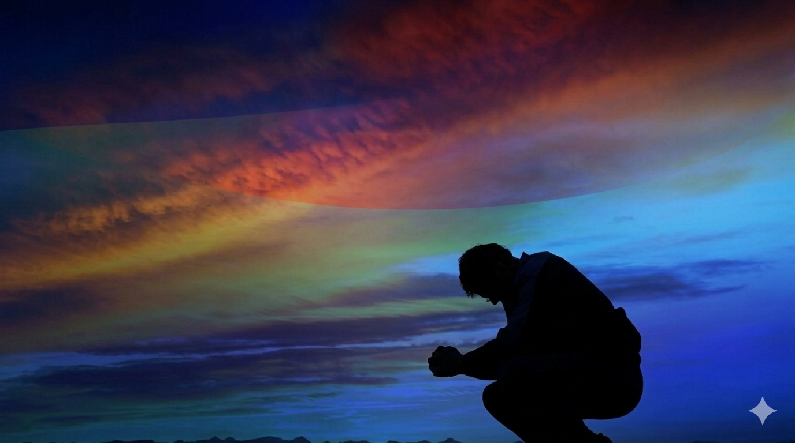

Cuando los discípulos del Señor Jesucristo —aquellos que inicialmente oyeron el llamado de Dios para seguirle— vieron que él anunciaba el reino, enseñaba y oraba a diario, le hicieron una pregunta: “Maestro, enséñanos a orar” 2 ; él de inmediato, les dio la oración Padre nuestro, que estás en el cielo, santificado sea tu nombre; venga a nosotros tu reino; hágase tu voluntad en la tierra como en el cielo. Danos hoy nuestro pan de cada día; perdona nuestras ofensas, como también nosotros perdonamos a los que nos ofenden; no nos dejes caer en la tentación, y líbranos del mal. Amén. modelo (el “Padre Nuestro”), y no para que fuera repetida ciegamente, sino declarada con sentido, donde cada palabra y línea tiene un significado y propósito específicos; y donde orar y obedecer a Dios coinciden.
En realidad, orar es tan importante que, elevándola a las alturas (al trono celestial), es el paso inicial y decisivo no solo para nosotros ser perdonados por nuestros pecados cometidos y así ser salvos 3 , sino también para invitar la presencia de Dios a nuestro espíritu para siempre 4 . Sin oración, no hay combustible para nuestra vida, y sin ella, estamos perdidos. Por ello es importante establecerla como disciplina; pues, así como el atleta debe entrenar de continuo para mantenerse en forma y apto para competir, el nuevo creyente debe cultivar este hábito pues no hay cosa que el diablo más tema: ver a un hombre y mujer de rodillas.
Cuando se ora, se debe creer lo que se ora 5 . No que no se tenga que tener perseverancia, pero tampoco rayar en el campo de la incredulidad y quedarse orando la misma oración como un ritual 6 . Es por ello que “orar sin cesar” 7 no significa orar 24 horas, sino tener una actitud de alerta para oír su voz 8 y hacer lo que Él nos pide en su Palabra. Orar, creer, agradecer, adorar y dar: todas van cogidas de la mano, son inseparables. Por supuesto que hay quienes tienen un llamado a la intercesión y no te van a orar por solo 5 minutos. El llamado apóstol de la fe, el finado inglés Smith Wigglesworth al ser una vez preguntado cuánto oraba al día, respondió: “Cuando lo hago, no suelo pasar más de media hora orando en una sola ocasión, pero nunca paso más de media hora sin orar”!
Cuando te sientes a comer, dale gracias y donde quiera que estés, agradécele al Señor por haberte dado la vida y por guardarte a ti y a los tuyos de todo mal y de todo peligro. Ora por tus planes y por los de los misioneros en todo el mundo. Ora por tu presidente y por las autoridades. ¡Eso sí, ora siempre!